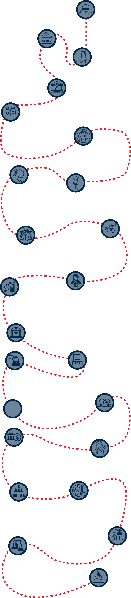

How women have influenced capitalism
in America:
A timeline of achievements
Women entrepreneurs, policy leaders, financiers and changemakers have made significant strides in shaping the opportunities and rights women have today. In 1970, about 43 percent of women ages 16 and older were in the labor force. In 2000, about 47 percent of people in the labor force were women. But there’s still work to be done: In 2021, roughly 25 percent of C-suite positions were held by women, compared with 75 percent for men.
The potential for women in the free market is due in large part to women leaders and innovators who weren’t afraid to push boundaries, rewrite rules and take risks.

1809
Mary Kies becomes the
first American woman
to hold a patent in her
own name after
inventing a method of
weaving straw with silk
and thread for hats
1870
Victoria Woodhull writes
a letter to the New York
Herald announcing her
candidacy for
president — 50 years
before women’s
surage. She and her
sister, Tennessee Claflin,
broke the gender barrier
on Wall Street: they
made millions advising
clients such as Cornelius
Vanderbilt through the
first woman-owned
brokerage.
1869
The Daughters of St. Crispin
shoe stitchers is founded,
becoming the first national
women’s labor union.
1903
Maggie Lena Walker becomes the first woman
in the United States to charter a bank, St. Luke’s
Penny Savings Bank; she served as president
until her death in 1934. Walker was a leading
advocate for women and African Americans in
the segregated South and founded St. Luke’s
as a way to encourage them to save money.
St. Luke’s was one of the few banks to survive
the stock market crash of 1929.
1910
Sarah Breedlove founds Madam C.J. Walker
Manufacturing Company in Indianapolis. Born
to enslaved parents, she went on to become
the first self-made woman millionaire through
creating and selling a line of hair care
products for African American women.
1920
The 19th Amendment
gives all American women
the right to vote. Women
were finally given a voice
to help choose their
elected leaders and
shape their country.
1940
A patriotic streak in British and American
women led them to favor native
apparel. Examples include American
designers such as Bonnie Cashin,
Adrian, Norman Norell, and
Mainbocher, which moved its
fashion house from Paris to NYC.
1959
Barbie is introduced at the
International Toy Fair aer Mattel
cofounder Ruth Handler fought for
several years to get the dolls made.
Male executives thought the dolls
were too sophisticated; their curvy
figure and made-up face were a
departure from the baby dolls young
girls played with. In the first year,
Handlersold approximately 350,000
units. Mattel went public the next year.
1974
The Equal Credit Opportunity Act
allows women to receive loans without
a male cosigner. Banks, credit unions,
department stores and other lenders are
prohibited from discriminating against an
applicant due to reasons related to race,
color, religion, national origin, sex, marital
status, age or participation in
public-assistance programs.
1963
The Equal Pay Act addresses the
problem of women earning less for
the same jobs as men — mandating
equal pay for equal jobs, regardless
of gender.
1975
First Women’s Bank, organized by
Betty Friedan, opens in New York
City to cater to women customers
and help foster equal opportunities
for women in banking.
1977
Juanita Kreps becomes the first woman U.S.
secretary of commerce. She also broke
barriers as the first woman director of the
New York Stock Exchange.
1984
Rosemary McFadden climbs the career ladder to become the
first woman president of the New York Mercantile Exchange — or
any trading exchange in American history at that point — after
starting her career as a sta attorney for the organization.
1993
The Family and Medical
Leave Act enables covered
employees to receive up to
12 weeks of unpaid time o
for events such as childbirth
and newborn care, as well
as caring for a spouse,
parent or child with a
serious health condition.
2007
Nancy Pelosi becomes the first
woman speaker of the U.S.
House of Representatives.
2009
The Lilly Ledbetter Fair Pay Act is signed to
bolster worker protections against pay
discrimination. The act allows individuals facing
pay discrimination to seek rectification under
federal anti-discrimination laws.
2009
Elena Kagan is sworn into the U.S.
Supreme Court, marking the first time the
court has had three women justices.
2010
2014
Janet Yellen becomes the first woman to
serve as chair of the Board of Governors
for the U.S. Federal Reserve. She also
becomes the first woman to hold each
of the top economic positions in federal
government aer being sworn in as U.S.
secretary of the treasury for the Biden
administration.
2018
In the midterm elections, 117 women
are elected to Congress, bringing the
total number of women serving to
127 — the most in history.
2019
Greta Thunberg becomes Time’s Person of
the Year for her climate change activism.
2020
Gitanjali Rao, a 15-year-old scientist
and inventor, is featured as Time’s
first “Kid of the Year.” When Rao
learned about the Flint, Michigan,
water crisis, she developed a
device to send water-quality
information via Bluetooth.
2020
Emmanuelle Charpentier and
Jennifer A. Doudna are awarded the
Nobel Prize in chemistry, signifying the
strength and intelligence of women
in science, a field that historically
favors men.
2021
Kamala Harris is sworn in as the first
woman U.S. vice president.
Sources: Bankrate, Ellevest, Farmers State Bank, HerMoney, History, McKinsey, PRB, The Helm, U.N. Women